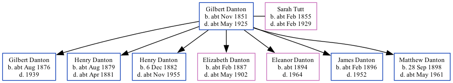

Gilbert Johnson Danton cNov 1851 - c1925
[ Home ] | [ Calendar ] | [ Surnames Index ] | [ Family History ], Gilbert Danton, the husband of Sarah Maria Tutt (the great-great-aunt of Nigel Horne), was born in Ramsgate, Kent, England c. Nov 18511,2,3,4,5, was baptized in Westbere, Kent, England on Feb 8, 1852 and married Sarah (with whom he had 7 children: Gilbert Edmund, Henry Johnson, Henry Johnson, Elizabeth Jane, Eleanor Johnson, James Edmund and Matthew Constable) in St Lawrence, Thanet, Kent, England on Sep 11, 18757.
Throughout his life, Gilbert lived in several places: in St Lawrence in 18811; at Ledbury Street, Peckham, London, England on Apr 5, 18918; at 83 Abbey Lane, West Ham, London on Mar 31, 19019; and at 83 Abbey Lane, Stratford, London on Apr 2, 191110.
He died c. May 1925 in West Ham, London6.
Children
- Gilbert Edmund was born c. Aug 1876
- Henry Johnson was born c. Aug 1879
- Henry Johnson was born on Dec 6, 1882
- Elizabeth Jane was born c. Feb 1887
- Eleanor Johnson was born c. 1894
- James Edmund was born c. Feb 1896
- Matthew Constable was born on Sep 28, 1898
Citations
- 1881 England Census Online publication - Provo, UT, USA: The Generations Network, Inc., 2004. 1881 British Isles Census Index provided by The Church of Jesus Christ of Latter-day Saints © Copyright 1999 Intellectual Reserve, Inc. All rights reserved. All use is subject to the (Relation to Head of House: HeadMarital Status: Married)
- 1891 England Census Online publication - Provo, UT, USA: The Generations Network, Inc., 2005.Original data - Census Returns of England and Wales, 1891. Kew, Surrey, England: The National Archives of the UK (TNA): Public Record Office (PRO), 1891. Data imaged from The National
- 1901 England Census Online publication - Provo, UT, USA: The Generations Network, Inc., 2005.Original data - Census Returns of England and Wales, 1901. Kew, Surrey, England: The National Archives of the UK (TNA): Public Record Office (PRO), 1901. Data imaged from the National
- 1911 England Census Online publication - Provo, UT, USA: Ancestry.com Operations, Inc., 2011.Original data - Census Returns of England and Wales, 1911. Kew, Surrey, England: The National Archives of the UK (TNA), 1911. Data imaged from the National Archives, London, England.
- England & Wales births 1837-2006 - Findmypast
- England & Wales deaths 1837-2007 - Findmypast
- England, Select Marriages, 1538–1973 Ancestry.com Operations, Inc.
- 1891 England, Wales & Scotland Census - Findmypast (was age 39 and the head of the household)
- 1901 England, Wales & Scotland Census - Findmypast (was age 49 and the head of the household)
- 1911 Census for England & Wales - Findmypast (was age 59 and the head of the household)
Media
England & Wales deaths 1837-2007 - BMD/D/1925/2/AZ/000205/100
1911 Census for England & Wales - GBC/1911/RG14/09342/0267/1
England & Wales births 1837-2006 - BMD/B/1851/4/AG/000856/024
England & Wales marriages 1837-2005 - BMD/M/1875/3/AZ/000068/102
England Marriages 1538-1973 - R_848394687
Family Tree
Generated by Ged2Site. Last updated on Jul 20, 2025